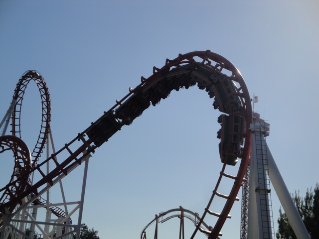
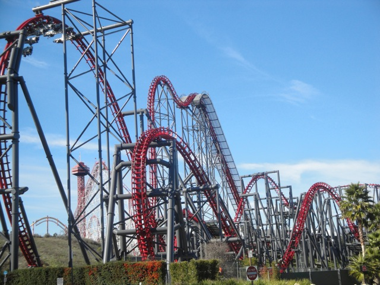
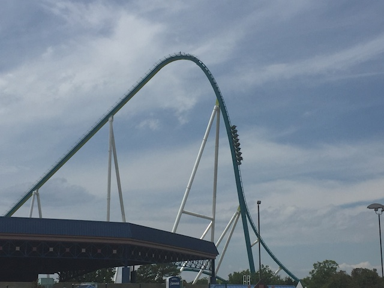
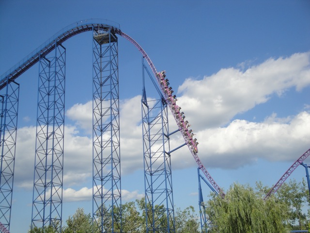
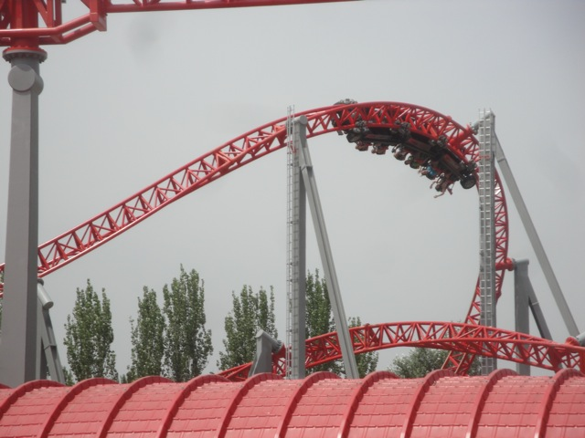

| |
Top 10 Steel Coasters

Welcome to an Incrediblecoasters Top 10 List. When we list stuff, we actually explain why. Steel Coasters. They come in so many different shapes and sizes. They can do so much. They can succesfully go upsidedown and just twist in ways that wooden coasters just can't. While wooden coasters were the cool kids on the block in the 20s, steel coasters were still being developed. A couple steel coasters began popping up in the 50s. In 1959, the first modern steel coaster opened up in the Disneyland Resort as the Matterhorn, which is known to people all around the world. But what really made steel coasters take off was the first mine train, Runaway Mine Train, opening at Six Flags Over Texas. Mine Trains then began popping up like daisies along with Galaxies and Schwarzkohpf Wildcats, and Jumbo Jets. Steel Coasters were doing great, but what really revolutionized the steel coaster was Corkscrew at Knotts Berry Farm (Now located at Silverwood). This was the first succesfull coaster to go upsidedown. Since then, people have gone nuts for inversions.
  And the list on innovations just keeps piling up. Schwarzkohpf Shuttle Loops first invented launch coasters as well as shuttle coasters, Magnum XL 200 at Cedar Point became the first hyper coaster and revolutionized size, and many many other innovations have shaped steel coasters into the crazy twisted humongous mind f*cking machines that are today's steel coasters. They can come in every shape imaginable. Some are amazing, some are just ok, some are for credit whores only, and some make you want to cry. The possibilities for steel coasters are endless with all the endless breeds of steel coasters and all the insane types of coasters within that breed of coasters. However, within all of the thousands of steel coasters in the world, which ones are the best? Which steel coasters make you want to jump up with joy the most? And which breeds make the cut? Well, we don't answer that. But by looking at the list, you can get a semi idea of what our style is. So sit back and be prepared to take a look at this list of some of the wildest rides ever. You're going to see 10 amazing roller coasters that that turned simple metal into 10 insane rides. They literally turned sh*t into gold here. Now let's take a look at the list.
And the list on innovations just keeps piling up. Schwarzkohpf Shuttle Loops first invented launch coasters as well as shuttle coasters, Magnum XL 200 at Cedar Point became the first hyper coaster and revolutionized size, and many many other innovations have shaped steel coasters into the crazy twisted humongous mind f*cking machines that are today's steel coasters. They can come in every shape imaginable. Some are amazing, some are just ok, some are for credit whores only, and some make you want to cry. The possibilities for steel coasters are endless with all the endless breeds of steel coasters and all the insane types of coasters within that breed of coasters. However, within all of the thousands of steel coasters in the world, which ones are the best? Which steel coasters make you want to jump up with joy the most? And which breeds make the cut? Well, we don't answer that. But by looking at the list, you can get a semi idea of what our style is. So sit back and be prepared to take a look at this list of some of the wildest rides ever. You're going to see 10 amazing roller coasters that that turned simple metal into 10 insane rides. They literally turned sh*t into gold here. Now let's take a look at the list.
We also have a Top 10 Steel Coasters Video. However, the video is outdated as several of the rides got bumped off the list and replaced with better steel coasters. But it's still a good video showcasing most of the coasters on this list, as well as showing other great steel coasters. Don't worry. We'll remake our Top 10 Steel Coasters video soon enough (Plus, I want to remake it anyway for asthetic reasons).
#10.

Kumba @
Busch Gardens Tampa
Tampa, Florida, U.S.A
Busch Gardens Tampa is a really awesome park. They have a fantastic coaster collection, with some of B&Ms best coasters, including Kumba. The best of the bunch and the one to make this list (though to be fair, all of them were on the list at one point). Now when you first look at Kumba, it looks fun. But it doesn't look special. It looks like your typical B&M standard layout. However, there's just one secret ingredient that really propels Kumba up the list from all the others. FORCE!!!! This may be one of the most forceful coasters ever. Seriously, this ride brings Montu down to the level of Silver Bullet and Talon. That's how strong the forces are on this ride. In fact, when I was riding Kumba Superman Style, I almost thought that my arm was going to come out of the socket in the heartline spin. That's how powerful this ride is. You don't hear me say that on any other coasters, now do you. Kumba. It learned to use the force.
 
#9.

X2 @
Six Flags Magic Mountain
Valencia, California, U.S.A
Located right in my own backyard, X2 is one of those coasters that thinks outside the box. It's the type of coaster you'd see on a Saturday Morning Cartoon that just looks demented, so this obviously gets peoples attention as they have to drive right by it to get into the parking lot. And rightly so. This ride is insane. You don't even know if you're going foreword or backwards (Well, you do, but it switches throughout the ride). Now originally, X2 opened up as X. But then X was having problems with it's trains, so they turned it into X2 and gave it new trains. Oh, and gave it music, fire, and a paint job that actually fits the ride. X2 doesn't do things that normal coasters do. It does a lot of strange funky stuff that while you don't really know what it is, it plants a smile on your face every single time. I know. I rode it about a bazillion times and I ALWAYS come off happy. And on top of that, it is home to the greatest first drop on any coaster ever built. So yeah, this ride is amazing. X2. You better be in, for the ceremony is about to begin.

#8.

Fury 325 @
Carowinds
Charlotte, North Carolina, U.S.A
Now the recent coasters that B&M has built have gotten a lot of criticism for being not nearly as forceful and good as they used to. They just don't make them like Kumba anymore they say. And yeah. For the most part. That's true. However, there are exceptions. This is that. You wouldn't think that Fury 325 would be that, since...B&M Hypers are fun, but come on. The Best B&M Hyper, Goliath @ SFOG, is really good. But it's not nearly as good as the best Intamin Hypers, Superman & Expedition Ge Force (Spoiler Alert: Both featured down below). So surely it'd be the same for their Giga Coasters. Nope. Fury 325 F*CKING KICKS ASS!!! It totally craps all over Millenium Force! Not only does this ride just fly through the course, and have a first drop just as good as that on Millenium Force, but it also has some really good airtime, great laterals, particuarly in that Treble Clef element, and the way it just roars and tears through the course, it's so damn fun. I really hope B&M starts making their rides like this, because this is amazing. Fury 325. MAKE THEM LIKE THIS PLEASE!!!
 
#7.

Eejanaika @
Fuji-Q Highlands
Fujiyoshida, Yamanashi, Japan
If you look at Eejanaika, you might be thinking "Why isn't this just tied with X2? Why is this better to the point that you put a B&M Giga Coaster between this and X2? Is there that much of a difference between the two coasters?" *Laughs* Oh, you poor naieve fool. If you think that this and X2 are the same, you are sorely mistaken and are gonna be in for a wild ride when you ride Eejanaika. I mean, if you look at them, they damn near look like clones. OK, there are a few differences. Eejanaika has the full full, it's a little bigger. But is that really enough to make Eejanaika that much better than X2? HOLY SH*T!!! YES!!! Eejanaika is X2 on steroids! Seriously, this ride flips so damn much. I think if you include the seats rotating as inversions, then Eejanaika would have the most inversions, barring the possible exception of a truly crazy ride on Insane. Not only does it have all the greatness of X2 and more flips, but this ride has thrills in places you would never expect. Be sure to look out for the surprise at the end (provided you don't spoil it with a POV). Eejanika. EEJANAIKA EEJANAIKA EEJANIKA!!!!

#6.

Superman: The Ride @
Six Flags New England
Agawam, Massachusettes, U.S.A
There are a lot of hyper coasters out there. However, none of them match up to Superman. All the B&M Hypers may be fun and have overrated floater air, but Superman can kick all of their asses in a millisecond. And the airtime. Oh man. The airtime on this thing is freaking incredible. It's got all sorts of ejector air including those crazy bunny hops as well as the "It Happens Hill" where no matter where you sit, you get ejected out of your seat. You can't avoid it. It happens. And it even has some floater air such as on the first hill right after the 1st Drop. But Superman not only has great airtime, but it also has a great first drop, nice speeds, a nice setting, fun oppertunites to "TAKE THE TUNNEL!!!!!", and of course, some truely crazy laterals in the second half that work quite nicely with the crazy ejector air bunny hops. Superman. Here to save the day yet again.
 
#5.

Ispeed @
Mirabilandia
Savio, Emilia-Romagna, Italy
Like Busch Gardens Tampa, Mirabilandia is also an awesome park as it too, has some seriously AMAZING coasters. And yeah. This is a really freaking good one. This is one of those coasters that when someone says "What do you like about this coaster?" All you can say is "EVERYTHING!!!!!!" Seriously, EVERYTHING on this ride is great!!! The launch is powerful, the ride is fast and maintains its speed throughout the ride. The ride has some good ejector air on the Top Hat, and those hills. God damn. These hills are so powerful, they just EJECT you!!!! It's almost like El Toro for a second there. And then you have those Heartline Rolls. Those f*cking heartline rolls. Those things are simply unbelieveable!!! I do not know how to express how much I love these heartline rolls. These things are so powerful that they put Kumba to shame. Think about that. I mean they just WHIP you with no mercy at all. In fact, Maverick was supposed to have a heartline roll, but they took it out cause they said it'd be too intense. Man, if they had kept that roll!!!!!! Oh well. Really, the only problem I can possibly think of is that its on the short side, and even for its kind, its a lot longer than other Rocket Coasters. So yeah. Ispeed. I-love this thing to death.

#4.
Maverick @
Cedar Point
Sandusky, Ohio, U.S.A
When you first look at Maverick, you say to yourself, "That's it?" "That's a Top 10 Coaster?" "That thing is puny!!!" Yeah, well looks can be decieving. This thing is f*cking amazing. Everything about this ride is just pure shock. While the ride may be puny, it is POWERFUL!!!!!!! It is seriously one the craziest ride any coaster can give you. Just like Ispeed, this ride does EVERYTHING and it does everything WELL!!!! I'd even go as far as to call it the American Ispeed. It's the type of ride that makes your mouth drop right after it just dropped from another amazing element on the ride. It has a crazy first drop AND an intense launch along with some EXTREME ejector air, some smooth inversions, and some of the most insane laterals you'll ever encounter. These things would make a Wild Mouse commit suicide in shame. So yeah. It may be small, but it does everything and it does everything right. Maverick. One of the most badass coasters on the planet.
 
#3.

Intimidator 305 @
Kings Dominion
Doswell, Virginia, U.S.A
Now, I know I praised Fury 325 a ton, and rightfully so. It's an amazing ride and a fantastic giga coaster. Fast, full of speed, decent airtime, good forces, great ride. But if you thought that that was the best giga coaster ever, well....I got a bridge to sell you. Yeah. Fury 325 may be great, but Intimidator 305 is just BATSH*T INSANE!!! This is NOT like the other giga coasters (Almost done with them. Just need Leviathan, and when it opens up, Orion). Those generally focus on speed, and in the better ones case, airtime (though only Fury 325 really gets any airtime. Sorry Millenium Force & Steel Dragon. You have some, but the airtime is mild). Intimidator 305 doesn't focus on that. What does it focus on instead? Positve and Lateral Gs. I know that gives it a mixed reputation in the community as the ride is too intense for some people (PUSSIES!!!). And yeah. The intensity of this thing is SO GOOD!!! I mean, I305 is the ONLY coaster that has made me not just grey out, but full on black out for like 6 seconds. Yeah. I can see not enjoying that to some extent, but I LOVED IT!!! Makes you feel light-headed. Especially with the airtime hill right after the turn of death (See. I305 has some mild airtime too). And then comes the laterals. GOD DAMN!!! This ride is SNAPPY!!! It's very Maverick-like in a sense. Except these turns and transitions are EVEN STRONGER!!! Yeah. The speed at which you go through those turns is just....WOW!!! SO INTENSE!!! SO GOOD!!! I305!!! GET ON IT YOU PUSSY!!!
#2.

Steel Vengeance @
Cedar Point
Sandusky, Ohio, U.S.A
Also at Cedar Point, this is another one of the coasters that really puts Cedar Point on the map. At first, it doesn't seem like anything too special. Yeah. It's an RMC. I absolutely love these rides, but they've recently become fairly common over the years (BEST COASTER TREND EVER!!!). But what makes the transformation from Mean Streak to Steel Vengeance that much better than Collosus turning into Twisted Collosus or Rattler turning into Iron Rattler? Well first off, both of those rides are amazing and the only reason both of those rides didn't make the list is because there's just too many good coasters nowadays #FirstWorldProblems. But Steel Vengeance is just a whole new level of amazing. It's not only an RMC, but also a hyper coaster. So it's technically a hyper RMC. And yeah. This ride is FAST!! On top of that, the inversions are just so damn snappy, with so many forces that twist you around and might get your head smacked. The airtime at the end is just so strong that....GOD DAMN!!! And this ride just keeps going. It just goes on and on and on and on and on and on!!! And I love that. There's no such thing as too much of one of the best coasters on the planet. This ride is so good that enthusiasts are now freaking complaining about the new RMCs because they don't look like they'll be as good as Steel Vengeance (Seriously!? Shut the f*ck up! Those all still look like amazing rides!). So yeah. Steel Vengeance. One of RMCs finest creations (And with a lineup as good as theirs, that's really saying something).
#1.
Expedition Ge Force @
Holiday Park
Hassloch, Rhineland-Palatinate, Germany
Yeah. This one shouldn't be too big of a surprise to you. This is pretty much on everyones Top 10 List. And yeah. This ride really is that freaking good. It's pretty much the European Equivelant of Bizzaro @ Six Flags New England. And yeah. This ride is all about airtime. HOLY SH*T!!!! Man does this ride have some good airtime. And its all over the ride and all over the spectrum. Extreme Ejector Air. Long Sustained Floater Air. You name it. Expedition Ge Force has got it. The bunny hops at the end, I mean. Damn. You are really in for a treat. And that first drop. Its amazing. Not only does it have great ejector air, but it also has some great laterals and an incredible rush of speed. It rivals on with X2 as far as first drops go. So yeah. That says a lot about it. And despite all the amazing airtime and the great first drop, there's more to it. Its got some great laterals as there are lots of overbanks and curves, great pacing with it always feeling fast, never slowing down, and a great setting in the German Woods. Expedition Ge Force. Worthy of its praise and the #1 spot on our list.
 
So now I'm sure you know what you're thinking. "Wow. That was the list. That is so wrong." Well no. This is just the current list. I haven't been on every steel coaster in the world, so until I do, this list is innacurate for a world wide description. There are still many many great steel coasters out in the world that would instantly make this list.Dimmu Borgir - A Jewel Traced Through Coal-1 And even when I do ride all of them, rides will deteriorate, go bad, and new ones will be built, so no list will ever last forever. But still, this list does pay tribute to 10 fantastic steel coasters that every roller coaster enthusiast should ride in their lifetime. And if you could tell, most of the rides on this list had similar qualities which appealed to my taste in steel coasters. However, steel coasters can come in many different styles and tastes for all sorts of people, enthusiasts or not, who have different tastes in coasters. There are still many other great coasters out there not on this list. Ones that I have ridden and know about and simply didn't make the cut, and ones that I haven't ridden yet and are just waiting to get into the Incrediblecoasters System. Either way, check out these Top 10 coasters. Every single one of them kicks some major ass.
 
|